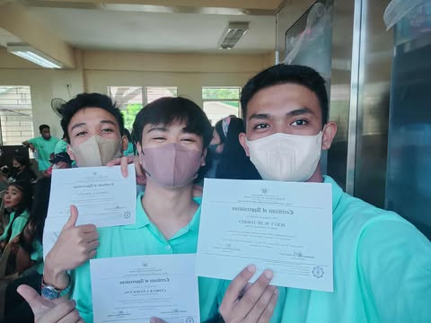
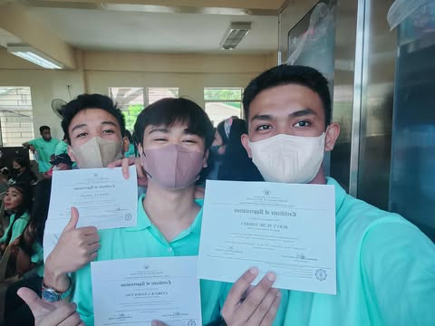

HI! I'm CEDRICK ENMOCENO
ASPIRING WEB DEVELOPER
STUDYING AT COLLEGE OF SCIENCE TECHNOLOGY AND COMMINICATION INC.[CSTC]
TACKING BACHELOR OF SCIENCE IN INFORMATION TECHNOLOGY MAJOR IN WEB AND MOBILE DEVELOPMENT.
Welcome to my portfolio! Here you can find my projects, skills, and more about me.
Feel free to explore and connect with me!
MY RESUMEAbout Me

Hi, I'm Cedrick Enmoceno 20 year old a third-year from Candelaria, Quezon province. Taking Bachelor of Science in Information Technology at CSTC Sariaya with a strong passion for creating innovative and user-friendly digital solutions. As an aspiring web developer, I am continuously building my skills in front-end, focusing on design, functionality, and modern web practices. My academic journey has equipped me with a solid foundation in programming, database management, and software development, while my personal projects allow me to explore creativity and problem-solving through real-world applications. I am eager to apply my knowledge to meaningful projects, collaborate with like-minded individuals, and grow into a professional developer capable of contributing to the ever-evolving tech industry. Outside of academics, I enjoy exploring new technologies, improving my coding skills, and staying up-to-date with the latest trends in web development. My goal is to become a proficient developer who not only builds websites but also delivers impactful digital experiences.
HOBBIES
Outside of my academic journey in Information Technology, I do thigns in maintaining a balanced lifestyle by engaging in activities that keep me physically active and mentally refreshed.
One of my main hobbies is playing basketball, which not only allows me to stay fit but also helps me build teamwork, discipline, and quick decision-making skills qualities.
I also apply in collaborative projects and problem-solving as an aspiring web developer.
I also enjoy exploring new technologies, experimenting with coding projects, and learning creative approaches to web development.
Combining both physical and technical activities gives me the drive to grow both as a student and an individual.
Education
 

JUNIOR HIGH SCHOOL
STUDIED AT STA.CATALINA NATIONAL HIGH SCHOOL SINCE GRADE 7 TO 10 AND GAIN A LOT OF SKILLS IN YEAR 2017 - 2021
SENIOR HIGH
STUDIED AND GRADUATED AT STACATALINA HIGH SCHOOL TAKING STEM STRAND IN YEAR
2021-2023